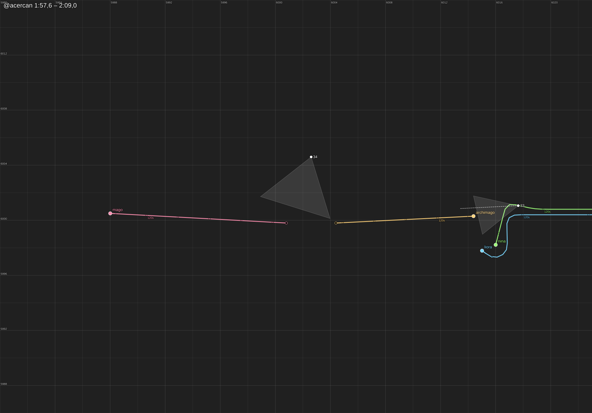
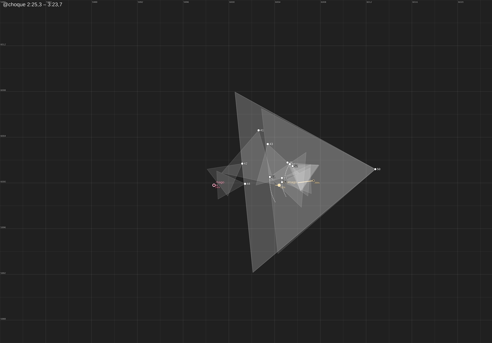
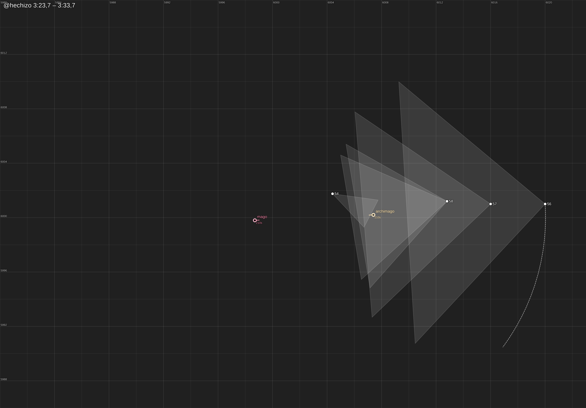

Recorridos · Prologo_UltimaNoche
Cada personaje con su color; un punto cada 2 s (con el segundo cada 10 s); los conos son las cámaras con su número de plano.
1. @inicio · 0:00,0 – 0:13,1

2. @saludo_fin · 0:13,1 – 0:39,6

3. @globo_sube · 0:39,6 – 0:49,8

4. @globo_fin · 0:49,8 – 1:11,6

5. @cielo · 1:11,6 – 1:27,3

6. @evacuar · 1:27,3 – 1:57,6

7. @acercan · 1:57,6 – 2:09,0

8. @duelo · 2:09,0 – 2:23,8

9. @choque · 2:23,8 – 3:23,3

10. @hechizo · 3:23,3 – 3:33,2
